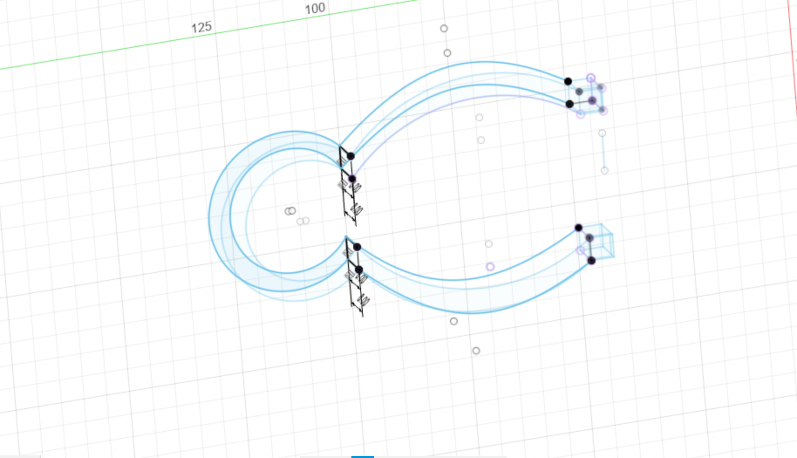

1.構想スケッチ
2.作品の画像


3.設計ファイル
stlファイル4.作品の説明
使用目的にとって異なる先端を差し替えるピンセット
５.何故この作品を作ろうという想いに至ったか
普段ピンセットをよく使う人がのは時計の修理師と思います。
時計修理師は異なるサイズのピンセットを使って、部品を挟み、時計を組み立てる必要があります。
そのためには多くの異なるサイズのピンセットが必要です。
でも、見た目の似たようなものを多く持っていると、探している時に、困ることがあります。
だから私は各種ピンセットの機能を一つの上に集中したいです。
6.制作プロセス
